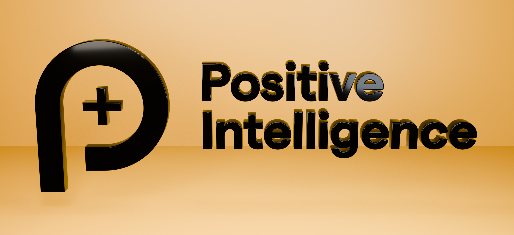
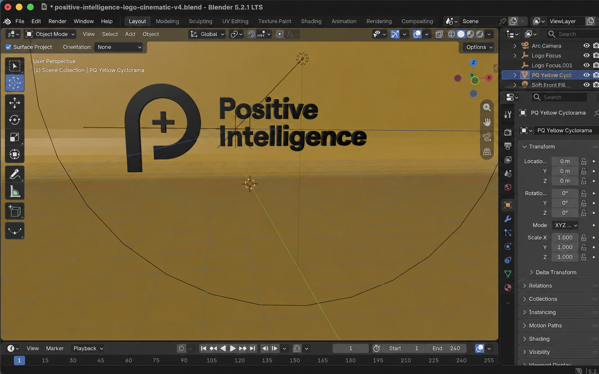
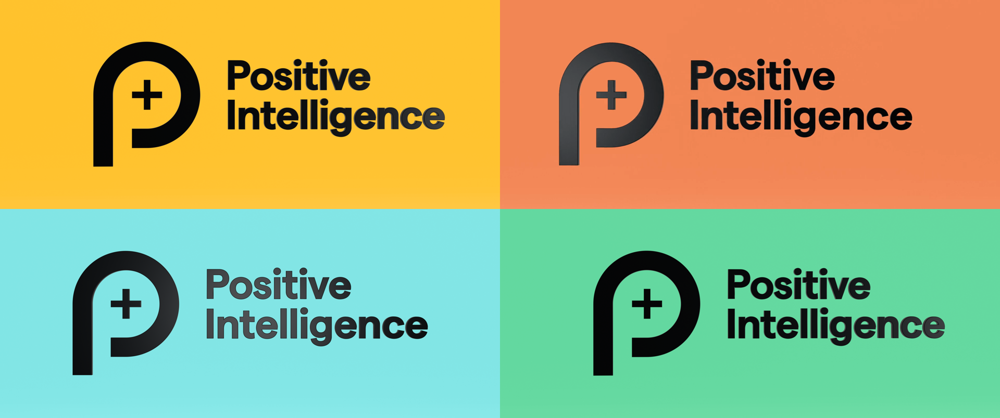

blender - September 5, 2026
Animating a logo in Blender with a coding agent
Blender's Python API makes agent-generated 3D scenes surprisingly editable.
Via Simon Willison and others, I learned that LLMs are now very good at Blender. That makes sense: geometry, materials, and motion are ultimately math and code, and Blender has an extensive Python API.
I needed an experiment, so I asked GPT-5.6 Sol:
Use the already installed
/Applications/Blenderto render an extruded version of the Positive Intelligence symbol and logomark from positiveintelligence.com.
Finding and modelling the logo was easy. Sol found the artwork, imported it, removed the white background and registered trademark, extruded the remaining paths, and applied a reflective black material.

Sol also created a normal .blend project containing the geometry, materials, camera, lights, and animation timeline. It can be opened and edited directly in Blender, just like a scene built by hand.

Futzing with light and motion
Lighting and motion were the tricky parts. I asked for a camera arc, a light moving in the opposite direction, and a more dynamic pan across the logo. Several iterations followed to remove a square reflection, make the light cross the whole face, and soften the final highlight.
The biggest visual improvement came from the backdrop. The curved wall used in a photography or film studio is called a cyclorama. Replacing separate floor and wall planes with one continuous cyclorama removed the horizon line and made the result feel much more like a studio shot.
The final animation uses a restrained camera arc, a circular moving light, a diffuse metallic reflection, and a cyclorama that cycles through four PQ brand colours.

The project lives at clyons/gpt-5-6-sol-blender-positive-intelligence-logo.
Scripts: initial render, first animation, v2, v3, and v4.
Files: MP4 and Blender project.